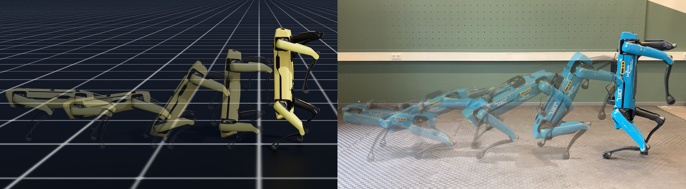
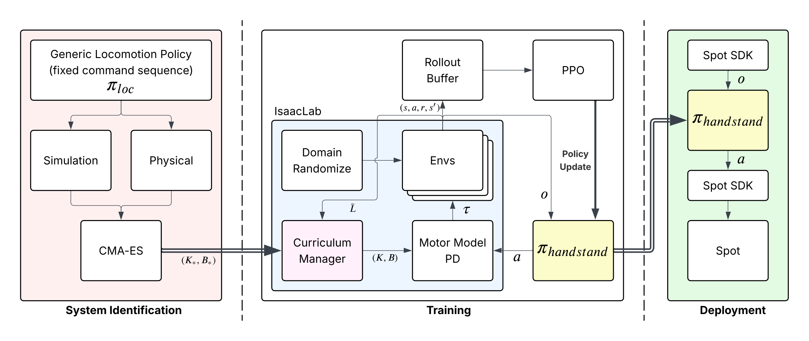
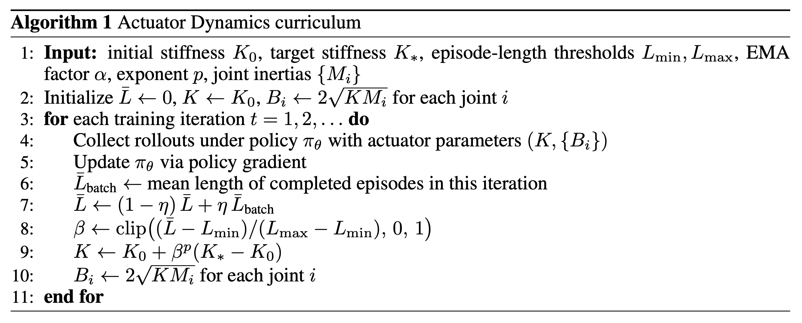

Boston Dynamics Spot transitioning from a four-legged stance to a balanced handstand. The policy is trained in simulation (left) and transfers zero-shot to the physical robot (right).
Reinforcement learning has produced capable controllers across a broad range of legged-robot tasks, but a subset of these tasks fail to converge under standard training: those for which most exploration trajectories terminate before producing useful gradient signal. To address such tasks we introduce the Actuator Dynamics Curriculum, a procedure that initializes joint stiffness at a high value and anneals it toward the system-identified value as completed episode lengths grow. Using a cart-pole system as a representative example, we show that higher closed-loop joint natural frequency under critical damping enlarges the viability kernel of the underlying Markov Decision Process, increasing the fraction of initial states from which the task is feasible. We validate the kernel monotonicity on the cart-pole and apply the curriculum to a quadrupedal-to-handstand transition on the Boston Dynamics Spot, a narrow-viability task where training under fixed identified stiffness plateaus at a policy that never completes the transition. The trained policy executes the transition in simulation across 10 seeds and transfers to hardware. More broadly, our results suggest that simulated actuator dynamics is a useful axis along which to design curricula for tasks in which exploration is bottlenecked by termination conditions rather than by reward signal.
The handstand transition requires Spot to pitch forward 90° in about a second. Part way through, the hind legs have left the ground and the body is rotating, and from those states most actions cause a fall and terminate the episode. Under the system-identified joint stiffness, training plateaus. Mean episode length stalls around 400 steps and the policy never completes the transition.

System identification of the actuator parameters is performed with CMA-ES against trajectories collected on a Spot. Training runs PPO in IsaacLab, where the curriculum manager sets (K, B) from the running episode length. The trained policy runs on an NVIDIA Jetson Nano onboard the robot and communicates via the Spot SDK.
Policies are trained in simulation with PPO using the RSL-RL library inside IsaacLab, with 4096 parallel environments on a single workstation (Intel Core i9, NVIDIA RTX 5000 Ada, 32 GB RAM). Physics runs at 500 Hz and the policy at 50 Hz, and an episode lasts 20 s or 1000 policy steps. Each seed trains for 10,000 iterations, which takes about 1.5 hours of wall-clock time, and we train 10 seeds per condition.
The policy is a small MLP with hidden layers of 512, 256 and 128 units and ELU activations. It maps a 45-dimensional proprioceptive observation (base linear and angular velocity, projected gravity, joint positions and velocities, and the previous action) to 12 joint position offsets relative to the default standing pose. At deployment the same network runs at 50 Hz on an NVIDIA Jetson Nano mounted on Spot and commands the robot through the Spot SDK.
For transfer to hardware, physical parameters are randomized during training. Ground friction and the base mass are perturbed once per environment at startup. At every episode reset the base pose and velocity and the joint positions and velocities are perturbed around the nominal standing configuration. During episodes the base is pushed with a random velocity every 2 to 5 seconds.
Flyover of the training environments as training progresses under the curriculum.
Each of the 4096 environments runs its own copy of the robot and all of them step together on the GPU. This is what makes policy gradient methods practical for legged robots, since orders of magnitude more interactions are collected per second of wall-clock time than a single simulation could provide. For the handstand transition, however, parallelism alone is not enough. Under the identified stiffness almost every rollout ends in a fall part way through the transition, so adding environments adds more terminated episodes rather than more useful gradient signal. The curriculum described next addresses this.
Thousands of Spot instances training in parallel in IsaacLab.
The curriculum acts on the simulated closed-loop joint dynamics. Each joint is position-controlled by a PD loop, and the curriculum schedules its stiffness. Training starts at K0 = 60, well above the system-identified value K* = 40, and anneals toward K* as the running mean of completed episode lengths grows, so the dynamics only relax once the policy is surviving long enough to learn from. Damping is recomputed at every iteration so that each joint stays critically damped, which means only the closed-loop bandwidth changes and not the character of the response. A stiffer loop tracks commanded joint positions more aggressively, which gives an untrained policy margin to recover from bad actions. By the end of training the stiffness has reached K* and the policy is operating under the actuator dynamics it will be deployed on.

We compare the curriculum against five ablations, each varying one design choice while keeping all other hyperparameters identical. Training at the identified stiffness K* or at the elevated stiffness K0 throughout, randomizing the stiffness between the two, annealing on a fixed time schedule instead of on episode length, and removing early termination are each trained for 10 seeds and evaluated over 1000 episodes under the deployment dynamics K*. None of them reaches the episode length or reward of the full curriculum.
| Condition | Episode length | Reward |
|---|---|---|
| Train at K* | 385 ± 47 | −42.1 ± 8.7 |
| Train at K0 | 215 ± 38 | −68.5 ± 12.3 |
| Randomize K ∈ [K*, K0] | 658 ± 89 | −18.7 ± 6.2 |
| Time-based annealing schedule | 751 ± 62 | −12.3 ± 5.1 |
| No early termination | 547 ± 56 | −35.4 ± 7.4 |
| Ours (Actuator Dynamics Curriculum) | 975 ± 12 | −4.76 ± 0.83 |
Ablations on the Spot handstand task, mean ± std across 10 seeds, each evaluated over 1000 episodes under the deployment dynamics K*.
Both conditions are trained for 10 seeds with identical hyperparameters. Without the curriculum, mean episode length plateaus around 400 steps and reward stays low. With the curriculum, both rise monotonically and converge within roughly 1.5 hours of wall-clock training per seed.
With ADC
Without ADC
Both policies after 10,000 policy updates. The curriculum-trained policy reaches the inverted equilibrium while the baseline falls.
All 10 curriculum-trained policies were deployed zero-shot to a physical Spot. Each produced the handstand transition and held the inverted pose under disturbances applied by prodding the robot with a pole. On carpet the transition succeeded on the first attempt. On padded surfaces it sometimes required a second attempt, which the policy executed as an emergent retry. Across approximately 20 recorded trials on carpet, soft padding and hardwood, all transitions succeeded.
Hard carpet. First-attempt transition.
Soft padding. Emergent retry.
Robustness. Holding the handstand under disturbances.
@inproceedings{chakraborty2026actuator,
author = {Chakraborty, Kousheek and Rajendra, Chandan K. and Alharbat, Ayham and Mersha, Abeje Y.},
title = {Actuator Dynamics Curricula for Narrow-Viability Tasks in Legged Robot Learning},
booktitle = {Conference on Robot Learning (CoRL)},
year = {2026},
}